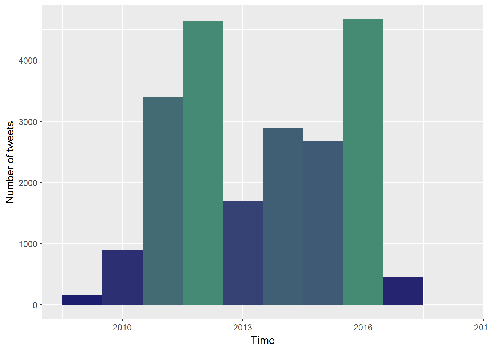

In this blog, I am going to use various R packages mainly from the tidyverse package by Hadley wickham to analyze tweets from twitter archive of lordmwesh to find out his tweeting habits.
lordmwesh is an ICT policy expert with vast experience in Internet governance. He was extremely instrumental in my formative stages of my career and continue to walk with me in my journey of data analytics. His twitting habits will be unravelled
To download your twitter data browse to your Twitter Profile > Settings page, then click request your archive. You should be able to download a .zip file with among other files, a nicely formated dataset of your tweets in form of an excel file.
The first step was to load the tweets started by determining the total number of tweets and lordmwesh from the time he joined twitter todate
